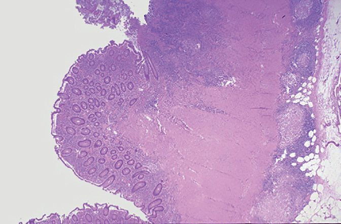
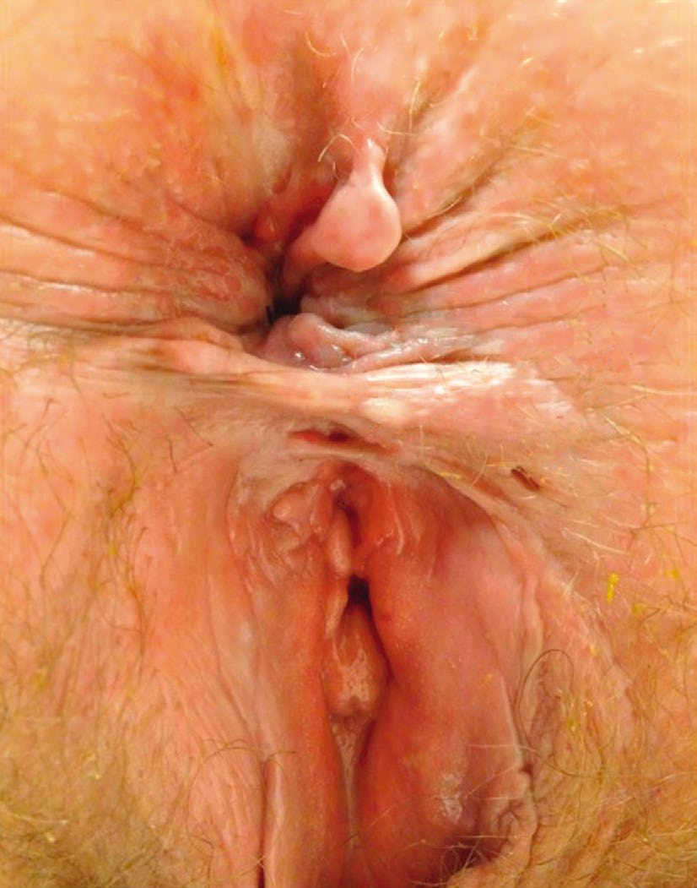
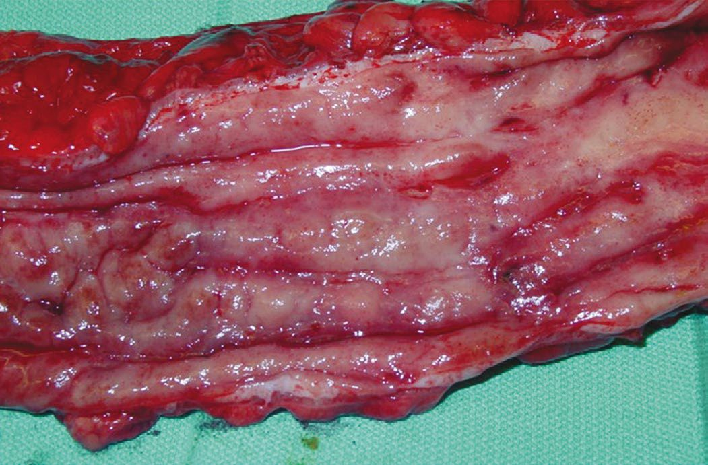
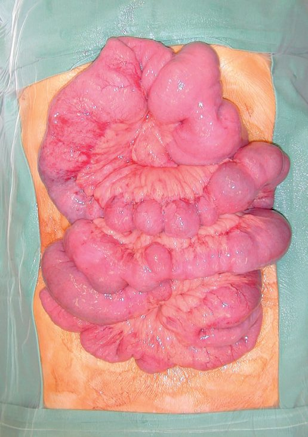

Crohn's Disease
Summary
- Crohn's disease is a chronic, transmural inflammatory disease that can affect any part of the gastrointestinal tract from mouth to anus, most commonly the terminal ileum, anal canal and colon [1].
- It is characterised by skip lesions, non-caseating granulomas and a tendency to stricturing and fistulating complications [1].
- Management combines medical therapy (aminosalicylates, steroids, immunomodulators and biologics) with bowel-preserving surgery reserved for complications, as surgical resection does not cure the disease [1].
- There is no curative treatment; the combined approach of optimal medical treatment with timely and strategic surgical intervention offers the most effective management [2].
- NICE NG129 governs Crohn's disease management in the UK.
- Its structure, inducing remission, maintaining remission, maintaining remission after surgery, then surgery itself, reflects a view of the disease in which the operation is one episode in a lifelong medical course rather than a definitive event [3].
- Three of its recommendations are firmly negative and easy to get wrong in an exam: do not offer azathioprine, mercaptopurine or methotrexate as monotherapy to induce remission; do not offer a conventional glucocorticosteroid or budesonide to maintain remission; and do not offer biologics to maintain remission after complete macroscopic resection of ileocolonic Crohn's disease [3].
Definition
- Crohn's disease is a chronic, full-thickness (transmural) inflammatory disease that can affect any part of the gastrointestinal tract from the lips to the anal margin, most typically the distal ileum, anal canal and large bowel [1].
- It is a chronic inflammatory condition of the gastrointestinal tract that can give rise to strictures, inflammatory masses, fistulas, abscesses, haemorrhage and cancer, and it will often simultaneously affect multiple areas of the tract [2].
- Crohn's disease became recognised as a specific pathological entity in 1932, when Crohn and colleagues identified regional enteritis as a unique clinical entity [2].
Pathophysiology
- Increased gut mucosal permeability develops early, allowing increased passage of luminal antigens and inducing a cell-mediated inflammatory response with release of pro-inflammatory cytokines (interleukin-2, tumour necrosis factor); Crohn's disease is associated with a defect in suppressor T cells [1].
- The terminal ileum is most commonly affected; colitis alone occurs in up to one-third of cases and perianal disease affects up to 50% overall, 25% of those with small bowel disease and 75% of those with Crohn's colitis [1].
- Macroscopically there is fibrotic thickening and luminal narrowing (stricturing) with "fat wrapping" (mesenteric fat encroachment), proximal dilated bowel, deep serpiginous mucosal ulceration producing a "cobblestone" appearance, and transmural inflammation causing adherent bowel loops, mesenteric abscesses and fistulae [1].

Clinical features
Presentation depends on disease pattern [1]:
- Small bowel disease: bouts of abdominal pain and mild diarrhoea, a tender right iliac fossa mass, intermittent fever, anaemia and weight loss; chronic fibrotic stenosis produces obstructive symptoms; growth retardation may occur in children.
- Fistulating disease: para-enteric abscess, entero-enteric or ileosigmoid fistulae (causing profuse diarrhoea via bacterial overgrowth rather than direct content transfer), enterovesical or enterocutaneous fistulae.
- Colonic disease: symptoms of colitis or proctitis as in ulcerative colitis, though toxic megacolon is much less common; colonic strictures may form.
- Perianal disease: bluish, oedematous skin tags; relatively painless fissures or superficial ulcers with undermined edges, often lateral rather than posterior or anterior; deep cavitating ulcers, perianal abscesses, fistulae, and in severe cases dense stricturing at the anorectal junction, sphincter destruction and a "watering-can perineum".
- Occasionally Crohn's disease presents acutely mimicking appendicitis, or with free perforation and localised or diffuse peritonitis.

Extraintestinal manifestations
Extraintestinal manifestations occur in up to 25% of patients and include erythema nodosum, pyoderma gangrenosum, arthritis and sacroiliitis, ankylosing spondylitis, primary sclerosing cholangitis (rarer than in ulcerative colitis), gallstones (from reduced bile-salt absorption after ileal disease or resection), amyloidosis, interstitial lung disease and nephrolithiasis [1][5].
Etiology
- Aetiology is incompletely understood, involving genetic and environmental interplay.
- Approximately 10% of patients have a first-degree relative with the disease and concordance approaches 50% in monozygotic twins; NOD2/CARD15 variants, in a gene mediating innate immune recognition of bacteria, are strongly associated [1][5]. Smoking increases relative risk threefold and worsens disease activity (the opposite of its effect in ulcerative colitis) and smoking cessation has a benefit comparable to medical therapy [1].
- Both ulcerative colitis and Crohn's disease show reduced gut microbial diversity.
- Crohn's disease is commonest in North America and northern Europe (annual incidence 8 per 100,000), slightly more common in women, with peak diagnosis at 25–40 years and a second peak around age 70; prevalence is three- to fivefold higher in Ashkenazi Jewish populations [1].
Diagnosis
- Full blood count (anaemia), low albumin, magnesium, zinc and selenium, raised CRP and ESR, and raised faecal calprotectin support active disease [1].
- Colonoscopy characteristically shows patchy inflammation with normal intervening mucosa, aphthous ulcers progressing to deeper ulceration, and possible stricturing, with biopsy needed to exclude malignancy [1].
- Small bowel imaging (MR enterography or enteroclysis, CT, high-resolution ultrasound) can show the "string sign of Kantor" (a long strictured terminal ileal segment) as well as fistulae and abscesses; capsule endoscopy is avoided where stricture is suspected because of impaction risk [1].
- MRI is used to assess complex perianal disease [1].

Distinguishing Crohn's disease from ulcerative colitis
| Feature | Ulcerative colitis | Crohn's disease |
|---|---|---|
| Distribution | Colon and rectum, continuous, rectum always involved | Anywhere in the GI tract, often skip lesions, rectal sparing common |
| Perianal disease | Rare | Common |
| Fistulae and strictures | Rare | Common |
| Layers involved | Mucosa and submucosa | Full thickness |
| Granulomas | No | Common (60%) |
Table reformats the distinguishing features [1][6].
Scoring and Severity
Disease phenotype is classified by the Montreal classification: age at diagnosis (A1 16 or under, A2 17–40, A3 over 40 years); behaviour (B1 inflammatory, B2 stenosing, B3 penetrating, with a "p" perianal modifier addable to any); and location (L1 ileal, L2 colonic, L3 ileocolonic, with L4 upper GI addable) [1]. This allows tracking of disease progression and informs prognosis and treatment planning.
- "Severe active Crohn's disease" has a formal NICE definition, because it gates access to biologics.
- For the purposes of the guidance it means very poor general health and one or more symptoms such as weight loss, fever, severe abdominal pain and usually frequent (3 to 4 or more) diarrhoeal stools daily
- People may or may not develop new fistulae or have extraintestinal manifestations. This clinical definition normally, but not exclusively, corresponds to a Crohn's Disease Activity Index (CDAI) score of 300 or more, or a Harvey-Bradshaw score of 8 to 9 or above [3].
- When using either index, take into account any physical, sensory or learning disabilities, or communication difficulties, that could affect the scores, and make appropriate adjustments [3].
Treatment and Management
Medical: corticosteroids induce remission in 70–80% of moderate-to-severe flares but are ineffective in fibrostenotic disease and should not be used for maintenance; aminosalicylates have limited efficacy in small bowel disease; metronidazole and ciprofloxacin are used short-term, particularly for perianal disease; azathioprine and 6-mercaptopurine provide steroid-sparing maintenance; ciclosporin and methotrexate have roles in refractory disease; anti-TNFα agents (infliximab, adalimumab), anti-integrin agents (vedolizumab, etrolizumab) and anti-IL-12/23 agents (ustekinumab) are used to induce and maintain remission, particularly in fistulating disease, though perforation or abscess are usually contraindications until drained [1]. Elemental diet or parenteral nutrition can induce remission in up to 80%, comparable to steroids, though relapse is rapid on cessation [1].
When to operate
Indications for surgery include acute free perforation, severe haemorrhage, acute severe colitis and complete obstruction (emergency); inflammatory mass, subacute obstruction, abscess and symptomatic fistulation (subacute); and steroid dependency or complications, growth retardation, or cancer prevention and treatment (chronic) [1]. Maingot's puts failure of medical treatment and inability to tolerate effective therapy as the most common indications, and gives a concrete threshold for steroid dependency: because severe complications are virtually inevitable with prolonged steroid treatment, surgery is warranted if the patient cannot be weaned from systemic steroids within 3 to 6 months [2].
Approximately 70% of patients require bowel resection within the first decade after diagnosis, and 40% require a further resection in the following decade, although rates may be falling in the biologic era [1]. Risk factors for postoperative septic complications include high-dose steroids (more than 10 mg prednisolone for more than 4 weeks), recent biologic therapy (within 14 days), more than 10% weight loss, coexisting sepsis, and albumin below 30 g/L, the presence of these favours a staged approach with stoma formation rather than primary anastomosis [1].
Inducing remission. Offer monotherapy with a conventional glucocorticosteroid (prednisolone, methylprednisolone or intravenous hydrocortisone) for a first presentation or a single inflammatory exacerbation in a 12-month period [3]. Consider enteral nutrition as an alternative to a conventional glucocorticosteroid for children in whom there is concern about growth or side effects, and for young people in whom there is concern about growth [3].
Second-line monotherapy is ranked by both efficacy and side effects, and NICE requires the trade-off to be explained. Consider budesonide for distal ileal, ileocaecal or right-sided colonic disease if conventional glucocorticosteroids are contraindicated, declined or not tolerated, explaining that budesonide is less effective than a conventional glucocorticosteroid but may have fewer side effects [3]. Consider an aminosalicylate on the same conditions, explaining that aminosalicylates are less effective than either a conventional glucocorticosteroid or budesonide, but may have fewer side effects than a conventional glucocorticosteroid [3]. Do not offer budesonide or aminosalicylate treatment for severe presentations or exacerbations [3].
Add-on treatment. Consider adding azathioprine or mercaptopurine to a conventional glucocorticosteroid or budesonide if there are 2 or more inflammatory exacerbations in a 12-month period, or the glucocorticosteroid dose cannot be tapered [3]. Assess thiopurine methyltransferase (TPMT) activity before offering azathioprine or mercaptopurine. Do not offer them if TPMT activity is deficient (very low or absent); consider a lower dose if TPMT activity is below normal but not deficient [3]. Monitor for neutropenia in people taking azathioprine or mercaptopurine even if they have normal TPMT activity [3]. Consider methotrexate on the same exacerbation criteria for people who cannot tolerate azathioprine or mercaptopurine or whose TPMT activity is deficient [3].
- Biologics.
- Infliximab and adalimumab are recommended for adults with severe active Crohn's disease not responding to conventional therapy, or who are intolerant of or have contraindications to it, given as a planned course until treatment failure (including the need for surgery), or until 12 months after starting, whichever is shorter, after which the disease is reassessed [3]. Treatment should normally be started with the less expensive drug [3].
- Infliximab is recommended for active fistulising Crohn's disease not responding to conventional therapy including antibiotics, drainage and immunosuppression [3].
- Continuation requires clear evidence of ongoing active disease from clinical symptoms, biological markers and investigation including endoscopy if necessary; specialists should consider a trial withdrawal for all patients in stable clinical remission, reassess at least every 12 months, and allow restart if disease relapses after stopping [3].
- Treatment should only be started and reviewed by clinicians experienced in TNF inhibitors and in managing Crohn's disease [3].
- Maintaining remission. Offer azathioprine or mercaptopurine as monotherapy to maintain remission when they were previously used with a conventional glucocorticosteroid or budesonide to induce remission [3]. Consider them in people who have not previously received them, particularly with adverse prognostic factors, early age of onset, perianal disease, glucocorticosteroid use at presentation and severe presentations [3].
- Consider methotrexate only where it was needed to induce remission, where azathioprine or mercaptopurine were not tolerated, or where they are contraindicated by deficient TPMT activity or previous pancreatitis [3]. No treatment is an explicit option: the discussion of remission management should include both no treatment and treatment, covering the risk of exacerbation with and without drugs and the potential side effects, with the person's views recorded in the notes [3].
- Where someone chooses no maintenance treatment, agree a follow-up plan, ensure they know the symptoms suggesting relapse, most frequently unintended weight loss, abdominal pain, diarrhoea and general ill-health, ensure they know how to access healthcare, and discuss the importance of not smoking [3].
- Maintaining remission after surgery, the most surgically relevant section, and the least intuitive.
- To maintain remission in people with ileocolonic Crohn's disease who have had complete macroscopic resection within the last 3 months, consider azathioprine in combination with up to 3 months' postoperative metronidazole, or azathioprine alone if metronidazole is not tolerated [3]. Do not offer biologics and do not offer budesonide to maintain remission after complete macroscopic resection of ileocolonic disease [3].
- People already on biologics before the guideline was published in May 2019 continue until they and their clinician agree a change is appropriate [3].
Surveillance and bone health. Offer colonoscopic surveillance in line with the NICE guideline on colonoscopic surveillance in adults with ulcerative colitis, Crohn's disease or adenomas [3]. Do not routinely monitor for changes in bone mineral density in children and young people [3].
Surgeries
- Ileocaecal resection: the usual procedure for terminal ileal disease, with primary ileocolic anastomosis unless the patient is unwell, infected or malnourished, in which case an ileostomy without anastomosis is safer [1].
- Segmental resection: for short strictured segments of small or large bowel [1].
- Colectomy and ileorectal anastomosis: for colonic disease with rectal sparing and a normal anus [1].
- Subtotal colectomy and end-ileostomy: for Crohn's colitis presenting as acute severe colitis, managed as for ulcerative colitis [1].
- Panproctocolectomy and permanent end-ileostomy: for severe colonic and anal disease unresponsive to medical treatment [1].
- Loose seton drainage: for perianal fistulating disease, used long-term for palliation to avoid septic exacerbations while preserving continence [1].
- Ileal pouch–anal anastomosis is generally contraindicated in Crohn's disease, though panproctocolectomy or colectomy with ileorectal anastomosis remain options where rectal sparing exists [1].
Strictureplasty
- Strictureplasty is a bowel-sparing technique for fibrostenotic strictures with little active inflammation, avoiding resection and reducing short-bowel risk; it is contraindicated with phlegmon, cancer or haemorrhage [1].
- It is best used where resection would otherwise sacrifice a lengthy segment of bowel (long segments of stricturing disease, or patients with multiple prior resections) and where it offers a simpler alternative to resection, such as short recurrent disease at a previous ileocolic or enteroenteric anastomosis [2].
- Beyond preserving absorptive capacity, there is increasing evidence that disease acuity decreases at the strictureplasty site, becoming quiescent, with possibly a lower rate of recurrence [2].
| Technique | Stricture length | Principle |
|---|---|---|
| Heineke-Mikulicz | Short segments, 2 to 5 cm | Longitudinal antimesenteric incision extending 1 to 2 cm into normal elastic bowel on either side of the stricture, closed transversely in one or two layers |
| Finney | Up to 15 cm | The strictured segment is folded on itself in a U-shape; a seromuscular row is placed between the two arms, a U-shaped enterotomy made, then full-thickness closure and anterior Lembert sutures, in essence a short side-to-side functional anastomosis |
- Table reformats the strictureplasty techniques [1][2].
- Two technical points matter: if there is any concern that a stricture may harbour malignancy, take a biopsy with frozen section through the enterotomy; and repeated Heineke-Mikulicz or Finney strictureplasties should be separated from each other by at least 5 cm [2].
- A very long Finney strictureplasty may in theory create a functional bypass with a large lateral diverticulum at risk of bacterial overgrowth and blind loop syndrome, though this has not been observed in clinical practice [2].

A historical note with a modern exception. Bypass procedures were abandoned in the late 1960s in favour of limited resection, because persistence of disease put patients at risk of persistent sepsis and eventually neoplastic transformation, except in the duodenum, where a simple side-to-side retrocolic gastrojejunostomy adequately relieves obstructive symptoms, though duodenal disease is now more often managed with strictureplasty [2].
Early surgery is an option, not a last resort, in disease limited to the distal ileum. Consider surgery as an alternative to medical treatment early in the course of the disease for people whose disease is limited to the distal ileum, taking into account the benefits and risks of medical treatment and surgery, the risk of recurrence after surgery, and individual preferences and any personal or cultural considerations, recording the person's views in the notes [3]. Consider surgery early in the course of the disease, or before or early in puberty, for children and young people with disease limited to the distal ileum who have growth impairment despite optimal medical treatment and/or refractory disease [3].
- Strictures. Consider balloon dilation, particularly for a single stricture that is short, straight and accessible by colonoscopy [3].
- The discussion of dilation versus surgery must involve the person, a surgeon and a gastroenterologist [3].
- Factors to weigh are whether medical treatment has been optimised, the number and extent of previous resections, the rapidity of past recurrence, the potential for further resections, the consequence of short bowel syndrome, and the person's preference and how lifestyle and cultural background might affect management [3]. Ensure that abdominal surgery is available for managing complications or failure of balloon dilation [3].
Complications
Fibrotic strictures, enteric fistulae (entero-enteric, enterovesical, enterocutaneous, rectovaginal), intra-abdominal and perianal abscesses, free perforation with peritonitis, haemorrhage, and short bowel syndrome after repeated resections are recognised complications [7]. Short bowel syndrome and intestinal failure account for almost half of cases arising from Crohn's-related resection, occurring when remaining small bowel is under about 200 cm [7].
Postoperative recrudescence is the defining long-term problem. The cumulative probability of recrudescence requiring further surgery after ileal resection is approximately 20%, 40%, 60% and 80% at 5, 10, 15 and 20 years respectively [1].
Prognosis
- Crohn's disease is a chronic relapsing disease; surgery does not cure it, and reoperation is likely over a patient's lifetime, so bowel and sphincter preservation are prioritised at every operation [1].
- Even with optimal treatment, recurrences and relapses are frequent, and the course and response to therapy can be difficult to predict [2].
- Colonic Crohn's disease is a long-term risk factor for colorectal cancer [8].
References
- Bailey & Love's Short Practice of Surgery, 28th ed., Ch. 75 Inflammatory bowel disease
- Maingot's Abdominal Operations, 13th ed., Ch. 45 Crohn's Disease
- NICE Guideline NG129: Crohn's disease — management (2019), 1.2; 1.2.1; 1.2.2; 1.2.3; 1.2.4; 1.2.5; 1.2.6; 1.2.7; 1.2.8; 1.2.9; 1.2.10; 1.2.12; 1.2.13; 1.2.15; 1.2.16; 1.2.18; 1.2.19; 1.2.20; 1.3; 1.3.1; 1.3.2; 1.3.3; 1.3.4; 1.3.5; 1.3.6; 1.3.7; 1.4; 1.4.1; 1.4.2; 1.4.4; 1.4.5; 1.4.6; 1.5; 1.5.1; 1.5.2; 1.5.3; 1.5.4; 1.5.5; 1.5.6; 1.6.1 www.nice.org.uk
- Sabiston Textbook of Surgery, 22nd ed., Ch. 95
- Schwartz's Principles of Surgery: ABSITE and Board Review, Ch. 28
- Schwartz's Principles of Surgery: ABSITE and Board Review, Ch. 29
- Bailey & Love's Short Practice of Surgery, 28th ed., Ch. 74 The small intestine and Ch. 75
- Oxford Handbook of Clinical Surgery, 5th ed., Ch. 12